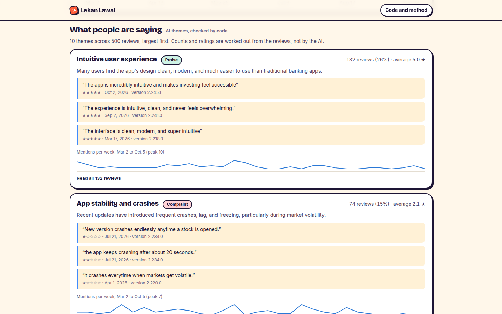

What it does
App Store ratings hide a lot. An app can show 4.6 stars because of years of happy users while this month's users are struggling. Type the name of any iPhone app and this tool pulls its 500 most recent reviews straight from Apple, then answers the questions a product or support team actually asks: are things getting better or worse, did the last update cause it, and what exactly are people unhappy about?
For Wealthsimple, the answer is striking. Its all-time rating is 4.6 stars, but its 500 most recent Canadian reviews average 3.5, and a third of them are 1 or 2 stars. The themes say why: crashes when markets get busy, an update loop that locks people out, slow transfers, and an iPad layout that broke in the latest version.
Two kinds of answers
Numbers, with no AI at all. The star breakdown, ratings week by week, and the average rating for each app version are counted directly from the reviews, so they're exact. The version table is often the most useful part: it shows which update made ratings drop.
Themes, suggested by AI and checked by code. Google's Gemini reads the reviews and groups them into complaints, praise and feature requests, with a few quotes for each. Then the page checks its work. Every quote must appear word for word in a real review, and that review must be one the AI put in the same theme. The AI never produces a number: how many reviews mention a theme, and their average rating, are counted by code.

How I know the themes are trustworthy
Testing found a gap in my first version. Checking that a quote exists isn't enough: a real quote from an unrelated review could still be shown as evidence. A happy "the premise of the app is exceptional" turned up under "Slow customer support". Now a quote only counts if its review belongs to that theme. A "complaint" whose reviews average 4 stars or more is flagged instead of trusted.
Why it replaced my ticket triage project
My earlier project sorted support tickets with AI, and it measured 90% accuracy, but on tickets I wrote myself. Nobody could check that against reality. This works on real, public data that anyone can look up, and it answers a question real teams have. It keeps the part of that project I cared about: the AI suggests, and code checks.
Limits
- Apple only shares an app's 500 most recent written reviews per country, so this covers recent months, not an app's whole history.
- The checks prove every quote is real and comes from the right reviews. They don't prove the AI grouped every review the way a person would; a hand-labelled sample would measure that.
- The first look at an app takes about 40 seconds while the AI reads 500 reviews. After that it's saved for a day, so it loads in a few seconds for everyone.